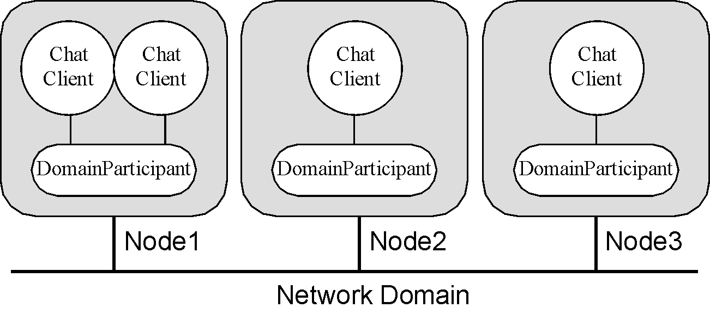
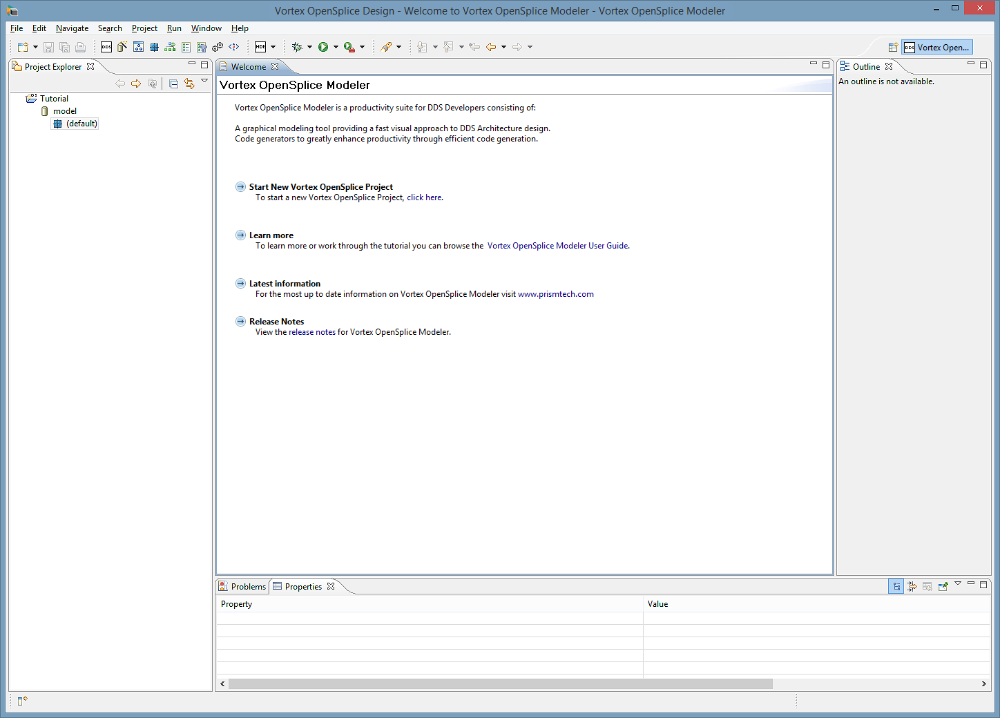
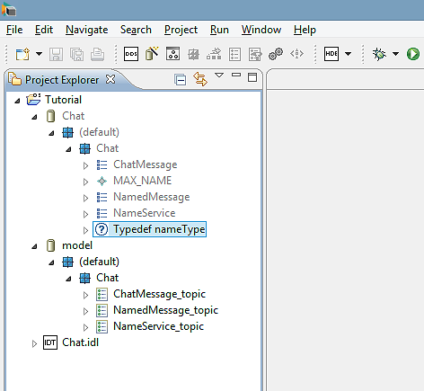
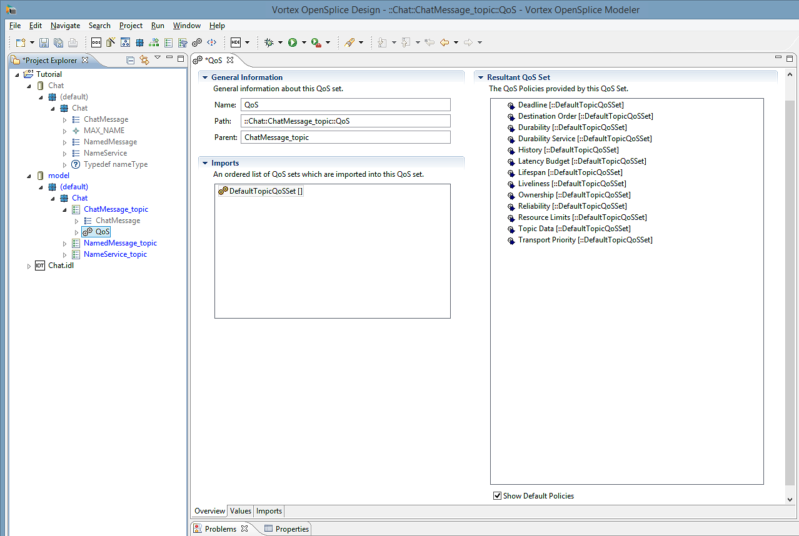
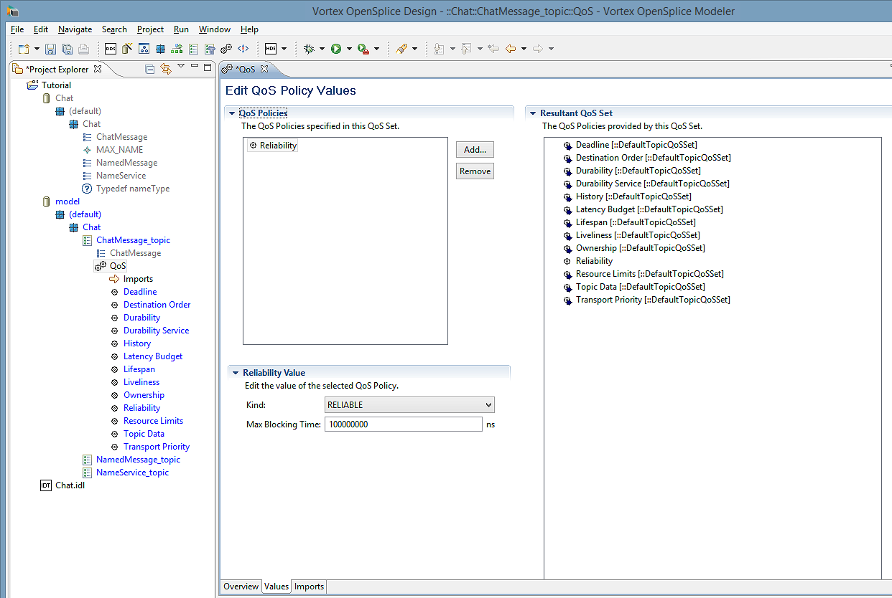
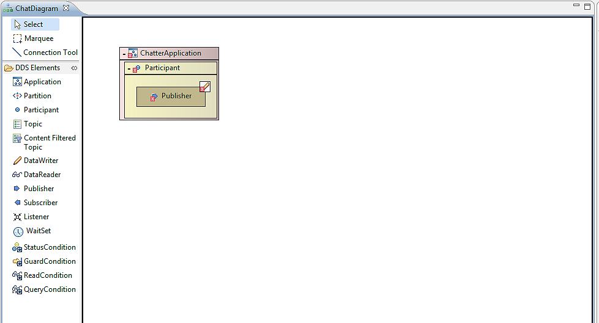
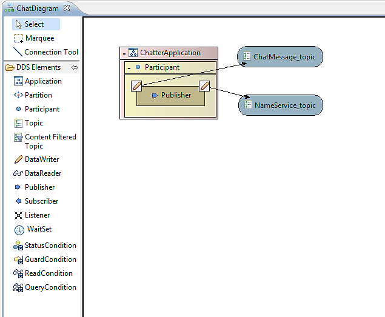
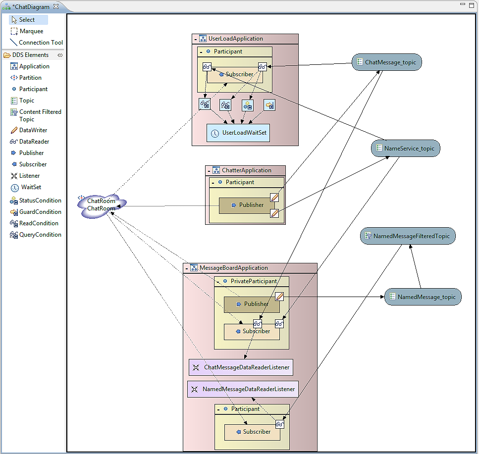

9. Tutorial¶
This tutorial uses an example DDS-based chatroom system consisting of three autonomous applications (the Application Model) plus data type definitions (the Information Model) to demonstrate how to use the basic features of the Vortex OpenSplice Modeler modeling tool.
The purpose of this tutorial is not to describe DDS nor the example application’s in-depth logic and architecture, but rather to show how a project can be created, modeled and implemented using the Vortex OpenSplice Modeler.

A completed Chatroom example project is included with Vortex OpenSplice Modeler. The completed example can be opened by right-clicking in the Project Explorer, choosing New > Example to open the New Example dialog, selecting Chatroom, then clicking the Finish button. The Chatroom project and three other projects, which contains the Chatroom’s generated and (example) user-written code, should open in the Project Explorer.
Java and C++ versions of the Chatroom example are covered in this tutorial. The source code, for Java and C++, is provided in Appendix A Chatroom Example Java Source Code, and Appendix B Chatroom Example C++ Source Code.
A thorough tutorial on DDS, including a detailed description of the Chatroom example, is provided in the Vortex OpenSplice C Tutorial Guide [1] .
9.1. Example Chatroom Overview¶
The tutorial example, Chatroom, is a simple system which enables people to chat with each other. The system consists of autonomous applications, distributed amongst the system’s peers, which transmit messages between the system’s users (see Basic Chatroom Architecture).
This tutorial uses the Chatroom example to demonstrate how to:
- create a Vortex OpenSplice project which can generate the source code and interfaces for a DDS-based distributed application
- add Modeler’s components, DDS entities, and resources to the project
- create a model which establishes the relationships between the application’s entities
- generate Vortex OpenSplice-compliant source code
- implement the applications business logic and associated interfaces which use the generated code
The services or functions that the Chatroom provides includes:
- enabling users to log on and off the chatroom
- the users, called chatters, have unique IDs to identify them
- controlling user load by tracking who logs on and off of the chatroom
- enabling users to see which users are logged on to the chatroom
- enabling users to post messages to other chatters
- enabling users to subscribe to the messages being published
by other users
- messages are transmitted directly from the message publishers to all subscribers
The Chatroom employs the DDS-DCPS architectural approach, which is similar to a peer-to-peer architecture. Individual chatroom application nodes are distributed across hosts in a network (see Basic Chatroom Architecture).
Each chatroom application communicates directly with each of the others. This architecture is scalable and has a degree of fault tolerance (the chatroom system will continue to operate even if a node fails).
Basic Chatroom Architecture
{kind=link}
The Chatroom system consists of:
autonomous applications which perform specific tasks (the Application Model):
- Chatter - responsible for publishing the identity of the user, followed by all chat messages he or she wishes to transmit. (This application is write-only.)
- MessageBoard - responsible for subscribing itself to all chat messages and for displaying them in the order in which they are received. (This application is read-only).
- UserLoad - This part is responsible for continuously keeping track of users that join and leave the Chatroom. (This application is read-only).
Each of these applications are modeled as separate processes. They use the standard output to print their messages (output has been kept rudimentary in order to enable the example to remain focused on the efficient utilization of the DCPS).
data types which define the structure of the data or information which constitute the messages that users transmit between each other (the Information Model).
The Chatroom’s applications are constructed from:
- standard DDS entities, including
- DomainParticipants
- Publishers
- Subscribers
- Topics
- Content Filter Topics
- Listeners
- Partitions
- DataWriters and DataReaders
- WaitSets
- Conditions
- interfaces, implemented by the developer, which provide the Chatroom’s business logic
 The DDS-specific parts of the applications are generated by
Vortex OpenSplice Modeler and do not need to be implemented by
the developer.
The DDS-specific parts of the applications are generated by
Vortex OpenSplice Modeler and do not need to be implemented by
the developer.
9.2. Creating the Chatroom¶
The pathnames shown here use Unix forward slash ( / ) delimiters: Windows users should replace the forward slashes ( / ) in the pathnames with back slashes ( \ ) as well as adding the drive letter (for example, c:\).
Here is an outline of the steps to follow to create the Chatroom in the Modeler:
Step 1
Create a Project to contain the Chatroom application and information models.
Step 2
Import an IDL specification which defines the structure and Topic types (the Information Model) into the Tutorial project.
Step 3
Create a Chat module to hold the Chatroom components.
Step 4
Create the ChatMessage_topic, NamedMessage_topic and the NameService_topic (part of the Information Model) that the Chatroom requires.
Step 5
Set QoS policy values for the DDS entities.
Step 6
Create a partition which application’s subscribers and publishers will be associated with.
Step 7
Use the Diagram Editor to model the Chatroom’s applications.
Step 8
Generate the DDS-related source code from the application and information models.
Step 9
Implement the Chatter, MessageBoard and UserLoad applications’ business logic.
Step 10
Compile the code.
Step 11
Run and test the application.
These steps are described in detail below.
9.2.1. Step 1: Create a Project¶
Create a Project which will contain the information model and the applications (Chatter, MessageBoard and UserLoad) that will be modeled for the Chatroom.
If the Vortex OpenSplice Design Perspective is not open, then open it by clicking on the Window menu icon (located in the upper right-hand corner of the Workbench, above the Outline Section), then choosing Other > Open Perspective > Vortex OpenSplice Design.
Create a new project by choosing File > New > Vortex OpenSplice Project from the Menu Bar.
Enter the name Tutorial into the Project Name text box: this will be the project’s name.
If you clear the Use Default Location check box, then you
can save to your project to any directory by entering its
location into the Location text box.Click the Finish button to create the Tutorial project. The Tutorial project should now appear in the Project Explorer window (located on the left-hand side of the Eclipse Workbench).
Clicking the tree expansion icon
 will reveal the
project’s model and default module components.
will reveal the
project’s model and default module components.
{kind=link}
- Eclipse only auto-saves the project when the project is created. Eclipse does not auto-save any subsequent changes to a project. Remember to save any changes or additions to your project using File > Save from the menu or the [Ctrl]+[S] short-cut key combination.
New Project in Vortex OpenSplice Design Perspective
{kind=link}
9.2.2. Step 2: Provide an Information Model¶
Import an Interface Definition Language (IDL) specification which defines the data types and Topic types for the messages and other data the Chatroom needs (the Information Model).
 Vortex OpenSplice distributes data using structured data types. The
data types are transported using Topics. The OMG’s Interface
Definition Language (IDL), which is platform- and implementation
language-independent, is used by Vortex OpenSplice Modeler to
define the data types. The IDL definitions imported into the
project provide the data type definitions which constitute the
project’s information model.
Vortex OpenSplice distributes data using structured data types. The
data types are transported using Topics. The OMG’s Interface
Definition Language (IDL), which is platform- and implementation
language-independent, is used by Vortex OpenSplice Modeler to
define the data types. The IDL definitions imported into the
project provide the data type definitions which constitute the
project’s information model.
To import the IDL definitions for the Tutorial project:
Choose File > Import > Vortex OpenSplice > Vortex OpenSplice IDL Import Wizard, then click the Next button.
In the Vortex OpenSplice IDL Import Wizard:
a) Enter Tutorial into the Destination Folder entry box by using the Browse button (located adjacent to the box) to navigate to the Tutorial folder.
b) Enter <ospl>/examples/dcps/tutorial/idl/chat.idl into the IDL Source text box (or use the adjacent Browse button to navigate to the file), where:
<ospl> is your Vortex OpenSplice installation’s home directory
<lang> is the target language (Java or C++)
 Windows users should replace the forward slashes ( / )
in the pathname with back slashes ( \ ).
Windows users should replace the forward slashes ( / )
in the pathname with back slashes ( \ ).c) Click Finish when done.
A new model, called Chat, should appear (provided Eclipse is set to automatically build projects: this is the default behaviour). The Chat model will contain the Chat module and its data types (ChatMessage, NamedMessage and NameService).

The Chatroom’s NameService data type should not be confused with the OMG’s CORBA Naming Service of the same name; they are not related in any way. - ChatMessage -
- Contains the message to be published, a message index and the ID of the user publishing the message.
- NamedMessage -
- Contains the user name, user ID, message and message index, information that the MessageBoard application requires.
- NameService -
- Contains the details of a single user, their userID and name.
The IDL definitions for these data types are shown in the following code extract.
/*****************************************************************
*
* Copyright (c) 2006 to 2016
* PrismTech Ltd.
* All rights Reserved.
*
* LOGICAL_NAME: Chat.idl
* FUNCTION: Vortex OpenSplice Tutorial example code.
* MODULE: Tutorial for the Java programming language.
* DATE june 2006.
******************************************************************
*
* This file contains the data definitions for the tutorial examples.
*
***/
module Chat {
const long MAX_NAME = 32;
typedef string<MAX_NAME> nameType;
struct ChatMessage {
long userID; // owner of message
long index; // message number
string content; // message body
};
#pragma keylist ChatMessage userID
struct NameService {
long userID; // unique user identification
nameType name; // name of the user
};
#pragma keylist NameService userID
struct NamedMessage {
long userID; // unique user identification
nameType userName; // user name
long index; // message number
string content; // message body
};
#pragma keylist NamedMessage userID
};
9.2.3. Step 3: Create a Chat module¶
Create a Chat module for containing the Chatroom components.
Expand the model called model in the Project Explorer to show the default module. Right-click on the default module to display the context menu. Choose the New Module option from the context menu.
In the New Module wizard:
a) Enter Chat into the Name field.
b) Click Finish when done.
The Chat module should now appear as a child node of the default module.
9.2.4. Step 4: Create the Topics¶
Create the ChatMessage_topic, NamedMessage_topic and NameService_topic (part of the Information Model) that the Chatroom requires.
To create the ChatMessage_topic:
Expand the model called model in the Project Explorer to display the Chat module. Right-click the Chat module to display the context menu. Choose the New Topic option from the context menu.
In the New Topic wizard:
a) Enter ChatMessage_topic into the Name field.
b) Click the Browse button adjacent to the Data Type text box; this opens the Data Type Selection dialog. Navigate to the ChatMessage struct in the Chat module within the Chat model, then select the Chat struct, then click the OK button to confirm.
c) Click Finish when done.
The ChatMessage_topic should now appear as a child of the module under the default model.
Repeat these steps for the NamedMessage_topic and NameService_topic, but selecting the NamedMessage struct or the NameService struct, respectively, in the Data Type Selection dialog.
The Tutorial project should now contain the Chat Model, Chat Module, structs and topics as shown in the illustration below.
Tutorial’s Data Types and Associated Topics
{kind=link}
9.2.5. Step 5: Set the QoS policy values¶
Each DDS entity instance is automatically assigned a set of QoS policies, appropriately named the QoS Set. A QoS Set contains only the policies which are appropriate for the particular entity instance’s type. A QoS Set’s policy values are given pre-defined default values. These values can be changed using the QoS Set Editor.
 A QoS policy consists of one or more properties, each property
has a value. Strictly speaking, the value should be referred
to as a policy’s property value. However, for brevity, the term
policy value is used here to mean the policy’s property value.
A QoS policy consists of one or more properties, each property
has a value. Strictly speaking, the value should be referred
to as a policy’s property value. However, for brevity, the term
policy value is used here to mean the policy’s property value.
The Topics associated with the NameService and ChatMessage information models will be used to demonstrate how to set QoS policy values. The policies and their property values are:
| Topic Name | Policy | Property: Value |
|---|---|---|
| ChatMessage_topic | RELIABILITY | Kind: RELIABLE |
| NameService_topic | DURABILITY | Kind: TRANSIENT |
| RELIABILITY | Kind: RELIABLE | |
| NamedMessage_topic | RELIABILITY | Kind: RELIABLE |
 Note that NamedMessage_topic must have its QoS values set
identically to ChatMessage_topic.
Note that NamedMessage_topic must have its QoS values set
identically to ChatMessage_topic.
The Reliability policy’s Kind property will be changed to RELIABLE. To change this policy value:
Select ChatMessage_topic in the Project Explorer, then expand it to display its QoS Set component (displayed with the QoS icon ).
Select the QoS Set component.
Open the Vortex OpenSplice QoS Editor.
a) Double-click the QoS Set component
OR
b) Right-click the QoS Set component, then choose Splice QoS Set Editor from the pop-up menu.
The QoS Editor is shown below.
{kind=link}
QoS Editor’s Overview page
{kind=link}
 The QoS Editor consists of three pages, Overview, Values and
Imports, which are accessed by using the tabs located along the
bottom of the editor’s window.
The QoS Editor consists of three pages, Overview, Values and
Imports, which are accessed by using the tabs located along the
bottom of the editor’s window.
Choose the Values tab to display the Edit QoS Policy Values page. The screen contains:
- QoS Policies list - users can alter the property values of the policies which appear in this list
- Resultant QoS Set - lists all QoS policies for the entity which this QoS Set is assigned to
The Show Default Values check box, located below the
Resultant QoS Set, enables policies and their default
values to be shown in the list when the check box is set.Click the Add button adjacent to the list; this displays the New QoS Policy dialog.
Select Reliability from the drop-down list; this will add the policy to the QoS Policies list.
 The dialog’s drop-down list contains only the policies which are
appropriate for the entity. For example, this QoS Set is
assigned to a Topic entity, therefore only the policies which
are appropriate for a Topic appear in the list.
The dialog’s drop-down list contains only the policies which are
appropriate for the entity. For example, this QoS Set is
assigned to a Topic entity, therefore only the policies which
are appropriate for a Topic appear in the list.
The Reliability policy should appear in the QoS Policies as shown in the illustration below.
QoS Editor and Reliability Policy’s Property Value
{kind=link}
Select Reliability from the QoS Policies list; a Reliability Values screen will be displayed in the lower left-hand corner of the page. The Reliability Details screen enables the property values for the selected QoS policy to be changed.
Set the Kind value to RELIABLE. The Resultant QoS Set will be updated automatically to show the new QoS policy value (see QoS Editor and Reliability Policy’s Property Value).
Clear the Show Default Values check box to hide or show the
policy values which are inherited from Default QoS Set’s. The
value will always be shown if the policy value has been added to
a non-default imported set or the current set.
- Save the changes (using File > Save or [Ctrl]+[S]). Close the QoS Editor by clicking on the X in the QoS tab located at the top of the editor.
Repeat the above steps to set the NamedMessage_topic‘s Reliability and Durability policies, plus the NameService_topic‘s Reliability policy as shown in the table Policy Values for the Chatroom Topics.
9.2.6. Step 6: Create the ChatRoom Partition¶
The ChatRoom partition is used to ensure that only topics published to that partition are received by the system’s subscribers; all other topics are ignored. This allows other applications to publish and subscribe to the same topics without interfering with the ChatRoom applications.
Right-click the Chat module and choose New Partition. Change both the Name and Partition name fields to read ChatRoom.
Click Finish and the ChatRoom partition will be added to the Chat module.
9.2.7. Step 7: Create the Application Models¶
Add required entities using the Project Explorer and Diagram Editor, then model the Chatroom’s ChatterApplication, MessageBoardApplication and UserLoadApplication applications. All applications should be created within the Model called model.
 The steps given below generally use the Project Explorer to add
entities, although entities can also be added using the Diagram
editor.
The steps given below generally use the Project Explorer to add
entities, although entities can also be added using the Diagram
editor.
A Vortex OpenSplice Modeler Application component represents an executable application.
To add an Application component that represents the Chatroom’s ChatterApplication application:
a) Right-click on the Chat module in the Project Explorer, then choose New Application from the pop-up dialog; this will display the New Splice Application dialog.
b) Enter ChatterApplication into the Name text box.
c) Click the Finish button. The new ChatterApplication Application component should appear in the Project Explorer under the Chat module.
d) Save the changes.
DomainParticpants provide connections to information. To add a DomainParticpant to the ChatterApplication:
a) Right-click on the ChatterApplication in the Project Explorer, then choose New Domain Participant from the pop-up dialog; this will display the New Domain Participant dialog.
b) Enter Participant in the Name text box; this will be the DomainParticipant’s name.
c) Click the Finish button. The new Participant component should appear in the Project Explorer under the ChatterApplication application.
d) Save the changes (as before, use File > Save or [Ctrl]+[S]).
Diagram components are used to model the applications. To add a diagram component to the project:
a) Choose File > New > Diagram from the Eclipse menu; this opens the New Splice Diagram dialog.
b) Click the Browse button adjacent to the Module text box; this opens the Select Module dialog. Navigate to and select the Chat module, then click the OK button.
c) Enter ChatDiagram into the Name text box; this will be the diagram’s name.
d) Click the Finish button. The new ChatDiagram component should appear in the Project Explorer under the Chat module.
Add the remaining entities using the Diagram Editor and ChatDiagram.
a) Double-click on the ChatDiagram component OR right-click it and choose Edit Diagram in the pop-up dialog; this opens ChatDiagram in the Diagram Editor.
The Diagram Editor’s tool palette appears on the left-hand
side of the editor. This palette can be used to add the
entities to the project.Entities which have been added to the project, but do not appear in the diagram can be placed in the diagram by locating the entity in the Project Explorer, then dragging the entity into the Diagram Editor’s canvas area (the large area located to the right side of the palette, in central area of the Eclipse Workbench).
b) Locate the ChatterApplication component in the Project Explorer, then drag [2] it to the Diagram Editor’s canvas; a rectangular box should appear with ChatterApplication name displayed in the top section of the box. The Application box symbol is used as a container for other entities.
Symbols and containers can be moved or resized by selecting the
container then, respectively, clicking and dragging inside the
container or clicking a control point (the small, solid boxes
located along the container’s perimeter and corners) then
dragging it until the desired size is achieved, then releasing
the mouse button.
The view of the Diagram’s canvas can be zoomed in or out using
View > Zoom In or Zoom Out, OR by using the [Ctrl]+[=]
or [Ctrl]+[-] shortcut key combinations.Move the ChatterApplication container to the upper left-hand corner of the diagram canvas; this is to provide space in the canvas to add other entities.
Save the project.
c) Choose the Publisher tool from the Diagram Editor’s tool palette. Drag the Publisher tool to the Participant container; a new Publisher symbol, called Publisher1, should appear inside Participant. Rename Publisher1 to Publisher by right-clicking on the Publisher1 symbol, choosing Rename on the pop-up dialog which opens, then changing the name in the Rename Vortex OpenSplice Object dialog.
d) A DataWriter must be added to Publisher. Choose the DataWriter tool, then drag it to Publisher; new DataWriter symbols should appear in Publisher.
e) Save the project.
The ChatDiagram should now appear as shown below.
Initial ChatDiagram and Chatter
{kind=link}
The Chatroom’s Topics, ChatMessage_topic and NameService_topic, need to be associated with Publisher. Topics communicate with Publishers and Subscribers through DataWriters and DataReaders, respectively.
a) Drag the ChatMessage_topic and NameService_topic from the Project Explorer to a free area of the ChatDiagram canvas.
b) Choose the Connection Tool located in the Diagram Editor’s tool palette.
c) Click on the ChatMessage_topic symbol, drag the cursor to the DataWriter symbol in Publisher, then release the mouse button; a connection line, with an arrow pointing to the ChatMessage_topic, will be created. Rename the DataWriter to ChatMessageDataWriter (right-click on the DataWriter symbol, choose Rename in the pop-up dialog, then change the name in the Rename Vortex OpenSplice Object dialog).
d) Click on the NameService_topic symbol, drag the cursor to Publisher - not to the DataWriter symbol - then release the mouse button; a new DataWriter will be created in Publisher and a line will connect it with the NameService_topic. Rename the new DataWriter as NameServiceDataWriter.
DataWriters and DataReaders are created automatically when
dragging the Topic Connection Tool cursor from Topic to
Publisher or Subscriber symbols.e) Add the ChatRoom Partition using the Partition tool, then connect it to Publisher using the Partition Connection Tool.
f) Save the project. The ChatDiagram should appear as shown below.
{kind=link}
ChatterApplication with Connected Topics
{kind=link}
The Application models for the MessageBoardApplication and UserLoadApplication programs need to be added to the project, along with their related entities and connections. The instructions given in the previous steps and sub-steps can be used as a guide to adding the entities and connections.
a) For the MessageBoardApplication, add an Application component called MessageBoardApplication to the Chat module and DomainParticipants called Participant and PrivateParticipant to the MessageBoardApplication Application.
PrivateParticipant is used to simulate a multi-topic [3] . The PrivateParticipant subscribes to ChatMessage_topic and NameService_topic, as well as re-publishing them as a NamedMessage.
The view of the Diagram’s canvas can be zoomed out to provide
more visible space using View > Zoom Out or by using the
[Ctrl]+[-] shortcut key combination. Also, when the diagram
is larger than the visible part of the canvas, the visible
part can be moved by selecting the Outline view, then dragging
the light-blue transparent rectangle (which represents the
visible part of the canvas) until the required part of the
diagram is visible.Drag MessageBoardApplication into the ChatDiagram.
The message board application ignores messages from its own user. In order to perform message filtering, a Content Filtered Topic will be used to filter out messages with a particular userID.
A Content Filtered Topic is added to a diagram by choosing the Content Filtered Topic Tool from the Tool palette, then dragging and dropping it onto the diagram. A wizard dialog will then open. Enter NamedMessageFilteredTopic as the name. Select ::Chat as the module. Choose the related topic by clicking the Browse button beside the Topic field. Set the related topic to NamedMessage_topic in the ::Chat module. Finally, enter userID <> %0 as the Filter Expression.
Drag the NamedMessage_topic, ChatMessage_topic and NameService_topic into the ChatDiagram from the Project Explorer.
Add a Subscriber instance to the Participant, rename it to Subscriber (right-click on its symbol, choose Rename and change the name in the Rename Vortex OpenSplice Object dialog), then create a connection from the NamedMessage_topic to the Participant’s Subscriber instance (the connection will be linked through a DataReader). Rename this DataReader to NamedMessageDataReader.
Connect the Subscriber entity to the ChatRoom Partition.
Add a Subscriber to the PrivateParticipant and rename it as Subscriber. Connect this Subscriber to the NameService_topic, renaming the created DataReader to NameServiceDataReader. Connect the Subscriber to the ChatMessage_topic, again renaming the created DataReader to ChatMessageDataReader.
Next, add a Publisher named Publisher to the PrivateParticipant. Connect this Publisher to the NamedMessage_topic, renaming the created DataWriter to NamedMessageDataWriter.
Next, connect both the Subscriber and the Publisher to the ChatRoom partition using the Partition Connection Tool.
Listeners need to be added to the MessageBoardApplication application in order to listen for new messages. Add a listener by choosing the Listener Tool from the Diagram Editor’s Tool palette. Drop a listener into the MessageBoardApplication application. Rename the listener as NamedMessageDataReaderListener. Connect the listener to the NamedMessageDataReader located inside the Participant’s Subscriber symbol by using the Listener Connection Tool.
Add a second listener. Rename this listener as ChatMessageDataReaderListener. Connect this listener to the ChatMessageDataReader located in the PrivateParticipant’s Subscriber.
The status mask must now be set on both listeners.
Select each listener in turn. In the Properties View, expand the Status Mask section, then set the DATA_AVAILABLE status to True using the drop-down list.
b) For the UserLoadApplication, add an Application called UserLoadApplication to the Chat module and a DomainParticipant called Participant to the UserLoadApplication.
Drag UserLoadApplication into the ChatDiagram.
Add a Subscriber instance, to be named Subscriber, to the Participant, create connections from the ChatMessage_topic and NameService_topic to the Participant’s Subscriber instance (the connection will be linked through DataReaders). Rename the DataReaders to be ChatMessageDataReader and NameServiceDataReader, respectively. Edit the QoS Set associated with the ChatMessageDataReader. Add a History policy to the set, changing the kind to KEEP_ALL.
In the ChatDiagram, drag a WaitSet and place it into the UserLoadApplication application.
Right-click the WaitSet figure and rename it to UserLoadWaitSet.
Drag a GuardCondition into the application. Rename it to GuardCondition.
Choose the Connection Tool and connect the GuardCondition to the UserLoadWaitSet.
Drag a StatusCondition object into the application. Rename the StatusCondition object to StatusCondition and connect it to the UserLoadWaitSet.
Choose the Connection Tool again and connect the ChatMessageDataReader to the newly-created StatusCondition object.
Drag a ReadCondition object into the application. Rename the ReadCondition object to ReadCondition and connect it to the UserLoadWaitSet and the NameServiceDataReader.
Drag a QueryCondition into the application. Rename it to QueryCondition and connect it to the UserLoadWaitSet as well as to the ChatMessageDataReader.
Open the QueryCondition’s Properties dialog to set the filter expressions. Click on the arrow next to Query Expression to display the properties for the expression. Nexrt, click on the Sub Query Expression; this displays a button. Click the button and enter "userID=%0" in the Expression text box. Click the OK button to finish.
Set the state masks for the Query and ReadCondition as well as the status mask for the StatusCondition as shown in the table below.
Condition StatesMask Name Value StatusCondition Status Mask LIVELINESS_CHANGED_STATE True QueryCondition Instance State Mask ANY_INSTANCE_STATE True Sample State Mask ANY_SAMPLE_STATE True View State Mask ANY_VIEW_STATE True ReadCondition Instance State Mask ALIVE_INSTANCE_STATE True Sample State Mask NOT_READ_SAMPLE_STATE True View State Mask NEW_VIEW_STATE True Finally, connect the Subscriber to the ChatRoom Partition and save the project.
The ChatDiagram and the Chatroom Application model are now complete. The entities and connections should appear in the ChatDiagram as shown in the following illustration.
Chatroom Application Model
{kind=link}
9.2.8. Step 8: Generate the source code¶
Generate the DDS-related source code from the application and information models.
 Vortex OpenSplice must be installed and configured on the system in
order to generate the source code.
Vortex OpenSplice must be installed and configured on the system in
order to generate the source code.
The source code for the applications can be generated by right-clicking on the Chat module within the Chat model in the Tutorial project, then choosing Export Module from the context menu. The Export Wizard dialog should be displayed. Perform the following:
- The Project Name text box contains the name of the exported project. Enter a project name in the text box.
- Choose the desired target language from the Target Language drop-down menu.
- Click the Finish button to accept the options and generate the source code.
Three additional projects should be generated. The default values for the project name in the Export Wizard are: ChatterApplication, UserLoadApplication and MessageBoardApplication. Each project will contain two source folders, src and generated. The src folders are for user-written code and the generated folders contain the code generated by the Modeler.
In addition, a required jar file from Vortex OpenSplice, which contains the DDS Java libraries, are automatically added to each project’s build path. The added jar file is and dcpssaj.jar.
9.2.9. Step 9: Implement the applications’ business logic¶
Implement the Chatter, Message Board and User Load applications’ business logic.
The generated code simplifies development work through the creation of entities and by establishing the correct QoS values.
9.2.9.1. Java Implementation¶

The only Java files that users need to reference from their manually written code are located in the Chat package within a source folder called generated. The simplest way to access these generated files is to declare the import Chat.* in their Java code:
import Chat.*;
Each application is represented by a single class. These are:
- ChatterApplication
- UserLoadApplication
- MessageBoardApplication
The application and its contained entities are set up by statically calling the start() method on the application classes. For example:
ChatterApplication.start ();
Contained entities can then be retrieved from the application using get*() methods. For example, the following call would be made to retrieve the ChatMessageDataWriter from the Chatter application:
ChatMessageDataWriter talker =
ChatterApplication.Participant.Publisher.
ChatMessageDataWriter.getDataWriter();
Users should develop their application code in a chatroom module located in the relevant project’s src folder. It is suggested, for this tutorial example, using Chatter.java, MessageBoard.java, UserLoad.java, ChatMessageDataReaderListenerImpl.java and NamedMessageDataReaderListenerImple.java as the program names.
The code for these programs, as well as a ErrorHandler.java utility class, is located in the Chatroom example project and in Appendix A: Chatroom Example Java Source Code.
9.2.9.2. C++ Implementation¶

The only C++ files that users need to reference from their manually written code are located in the Chat namespace within the source folder called generated.
For all entities in the model, only the generated abstract base classes (*Wrapper.h) should be included in the business logic. The only exception is the application wrapper implementation header which needs to be included when the application wrapper must be instantiated. These implementation headers are:
#include "Chat/ChatterApplicationWrapperImplementation.h"
#include "Chat/ChatterApplication/MyAppDPWrapper.h"
#include "Chat/ChatterApplication/MyAppDP/MyPublisherWrapper.h"
Each application is represented by a single class. These are:
- ChatterApplication
- UserLoadApplication
- MessageBoardApplication
The application and its contained entities are instantiated by calling the start() method on an application instance. For example:
Chat::ChatterApplicationWrapper* chatApp = new
Chat::ChatterApplicationWrapperImplementation;
chatApp->start ();
Contained entities can then be retrieved from the application using get<entity_name>Wrapper() methods. For example, the following call would be made to retrieve the publisher from the ChatterApplication:
DDS:Publisher* publisher =
chatApp->getParticipantWrapper()->
getPublisherWrapper()->getPublisher();
Users should develop their application code in a chatroom module located in the relevant project’s src folder. It is suggested, for this tutorial example, using Chatter.cpp, MessageBoard.cpp, UserLoad.cpp, ChatMessageDataReaderListenerImpl.cpp and NamedMessageDataReaderListenerImple.cpp as the program names.
The code for these programs is located in the Chatroom C++ example project in Appendix B: Chatroom Example C++ Source Code.
9.2.10. Step 10: Compile the code¶
Vortex OpenSplice Modeler is configured to automatically compile and build the code in a user’s workspace: users do not need to do anything to compile their code, plus real-time feedback about errors is automatically provided.
 It is suggested the default Eclipse setting for automatic
building is retained (in other words, enabled).
It is suggested the default Eclipse setting for automatic
building is retained (in other words, enabled).
However, the automatic building can be disabled, if desired, by clicking the Project menu and then de-selecting the Build Automatically option.
When automatic building is disabled the Project can then be built by choosing Clean… from the Project menu. Projects are rebuilt after they are cleaned. A dialog is shown for cleaning all projects or selected projects.
9.2.11. Step 11: Run and test the Chatroom application¶
The Vortex OpenSplice daemon must be started before running Vortex
OpenSplice applications in Eclipse. The daemon can be started, as
well as stopped, using the HDE icon’s drop-down menu  located on the Eclipse Icon Bar.
located on the Eclipse Icon Bar.
Starting an Vortex OpenSplice daemon is only required when running a Shared Memory Deployment. For more details about starting OpenSplice, please see the OpenSplice Deployment Guide.
The HDE icon drop-down menu contains:
- Start OSPL - starts the daemon - note no feedback given
- Stop OSPL - stops the daemon - note no feedback given
- Run Tuner - launches the Vortex OpenSplice Tuner
- Run Configurator - launches the Vortex OpenSplice configurator
After the daemon is started each application can run by right-clicking on the Java or C++ class in the Project Explorer (for example Chatter.java or Chatter.cpp), choosing Run As > Vortex OpenSplice Java Application or Run As > Vortex OpenSplice Local C++ Application. The output of the application is displayed in the console.
It is suggested that, for this example, MessageBoard is run first, followed by UserLoad and finally Chatter in order for the applications to correctly interact.
Each application is run in its own console. The Console View, located at the bottom of the Eclipse screen, has a button for selecting the active console.
The daemon should be shut down when finished running the applications by using the tool bar button and drop-down menu.
9.2.11.1. Application Output¶
The output of each application should be as shown below:
Chatter
Writing message: "Hi there, I will send you 10 more messages."
Writing message: "Message no. 1"
Writing message: "Message no. 2"
Writing message: "Message no. 3"
Writing message: "Message no. 4"
Writing message: "Message no. 5"
Writing message: "Message no. 6"
Writing message: "Message no. 7"
Writing message: "Message no. 8"
Writing message: "Message no. 9"
Writing message: "Message no. 10"
MessageBoard
MessageBoard has opened: send a ChatMessage with userID = -1
to close it....
Chatter1: Hi there, I will send you 10 more messages.
Chatter1: Message no. 1
Chatter1: Message no. 2
Chatter1: Message no. 3
Chatter1: Message no. 4
Chatter1: Message no. 5
Chatter1: Message no. 6
Chatter1: Message no. 7
Chatter1: Message no. 8
Chatter1: Message no. 9
Chatter1: Message no. 10
Termination message received: exiting...
UserLoad
New User: Chatter1
Departed user Chatter1 had sent 11 messages.
UserLoad has terminated.
Footnotes
| [1] | Although the Tutorial Guide is written for the C language, the descriptions and information provided are useful generally. |
| [2] | Using the mouse, left-click on the component, drag it to the desired location, then release the mouse button. |
| [3] | Vortex OpenSplice Modeler does not currently support multi-topics. |

Table Of Contents
- 9. Tutorial
- 9.1. Example Chatroom Overview
- 9.2. Creating the Chatroom
- 9.2.1. Step 1: Create a Project
- 9.2.2. Step 2: Provide an Information Model
- 9.2.3. Step 3: Create a Chat module
- 9.2.4. Step 4: Create the Topics
- 9.2.5. Step 5: Set the QoS policy values
- 9.2.6. Step 6: Create the ChatRoom Partition
- 9.2.7. Step 7: Create the Application Models
- 9.2.8. Step 8: Generate the source code
- 9.2.9. Step 9: Implement the applications’ business logic
- 9.2.10. Step 10: Compile the code
- 9.2.11. Step 11: Run and test the Chatroom application